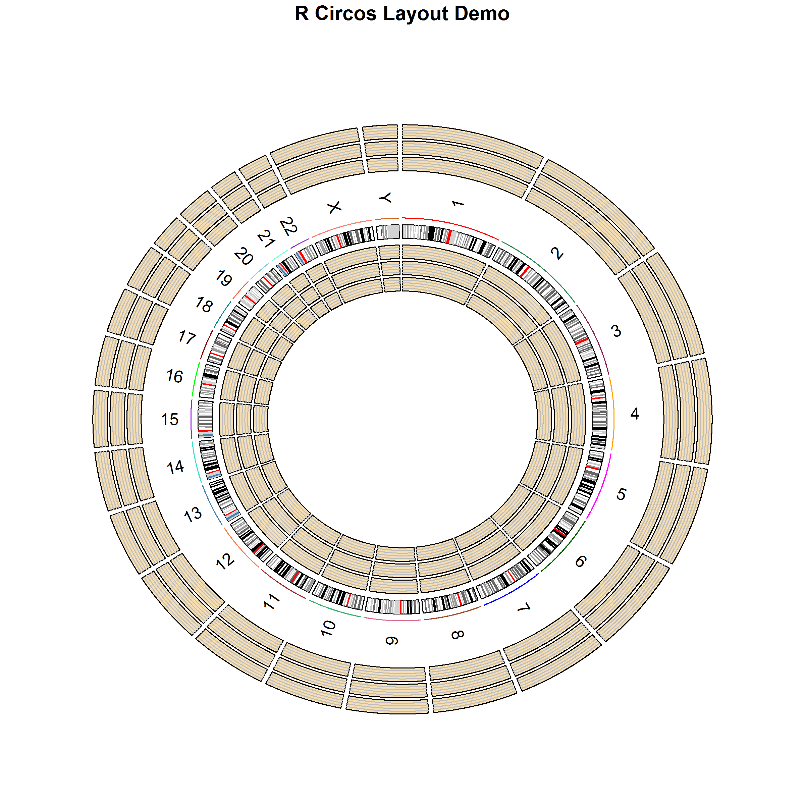
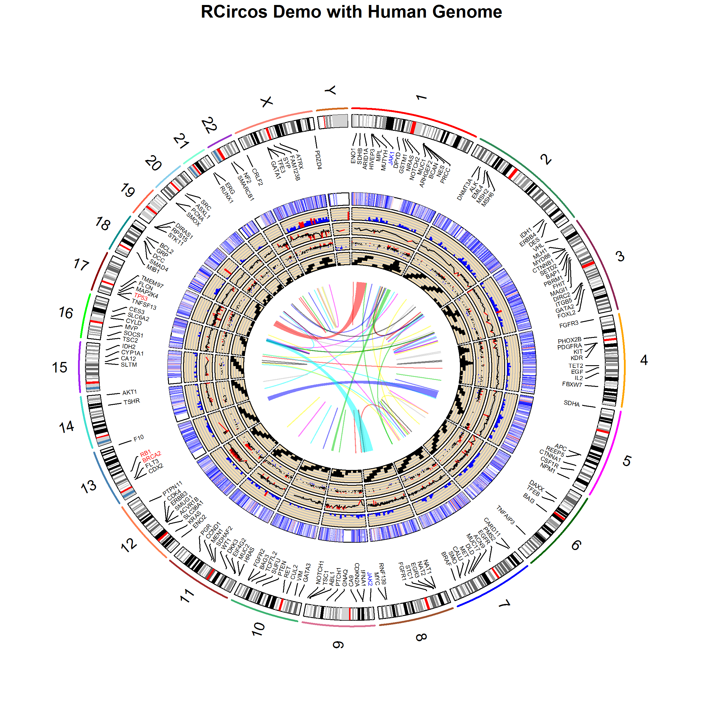

Using the RCircos Package
Authors: Hongen Zhang Reviser: Tianze Cao
2025-04-07
Source:vignettes/RCircos.Rmd
RCircos.RmdIntroduction
The RCircos package provides a set of graphic functions which
implement basic Circos 2D track plot [Krzywinski] for visualizing
similarities and differences of genome structure and positional
relationships between genomic intervals. The package is implemented with
R graphics package that comes with R base installation and aimed to
reduce the complexity of usage and increase the flexibility in
integrating into other R pipelines of genomic data processing.
Currently, following graphic functions are provided:
Chromosome ideogram plots for human, mouse, and rat
-
Data plots include:
heatmap
histogram
lines
scatterplot
tiles
-
Plot items for further decoration include:
connectors
links (lines and ribbons)
text (gene) labels
After successful installation of RCircos, one needs to load the library to get started using it:
Input Data Format
RCircos takes the input data in the form of a data frame that could be an object returned from read.table() or generated with other pipelines in the current R session. The first three columns of the data frame, except for input to the link plot, must be genomic position information in the order of chromosome names, chromosome start, and chromosome end positions.
## Chromosome chromStart chromEnd Data
## 1 chr1 45000000 49999999 0.070859
## 2 chr1 55000000 59999999 0.300460
## 3 chr1 60000000 64999999 0.125421
## 4 chr1 70000000 74999999 0.158156
## 5 chr1 75000000 79999999 0.163540
## 6 chr1 80000000 84999999 0.342921For gene labels and heatmap plots, the gene/probe names must be provided in the fourth column. For other plots, this column could be optional.
## Chromosome chromStart chromEnd GeneName X786.O A498 A549.ATCC ACHN
## 1 chr1 934341 935552 HES4 6.75781 7.38773 6.47890 6.05517
## 2 chr1 948846 949919 ISG15 7.56297 10.49590 5.89893 7.58095
## 3 chr1 1138887 1142089 TNFRSF18 4.69775 4.55593 4.38970 4.50064
## 4 chr1 1270657 1284492 DVL1 7.76886 7.52194 6.87125 7.03517
## 5 chr1 1288070 1293915 MXRA8 4.49805 4.72032 4.62207 4.58575
## 6 chr1 1592938 1624243 SLC35E2B 8.73104 8.10229 8.36599 9.04116
## BT.549 CAKI.1
## 1 8.85062 7.00307
## 2 12.08470 7.81459
## 3 4.47525 4.47721
## 4 7.65386 7.69733
## 5 5.66389 4.93499
## 6 9.24175 9.89727Different from other plot data, the input data for link line plot has only paired genomic position information for each row in the order of chromosome name A, chromStart A, chromEnd A, chromosome name B, chromStart B, and chromEnd B.
## Chromosome chromStart chromEnd Chromosome.1 chromStart.1 chromEnd.1
## 1 chr1 8284703 8285399 chr1 8285752 8286389
## 2 chr1 85980143 85980624 chr7 123161313 123161687
## 3 chr1 118069850 118070319 chr1 118070329 118070689
## 4 chr1 167077258 167077658 chr1 169764630 169764965
## 5 chr1 171671272 171671550 chr1 179790879 179791292
## 6 chr1 174333479 174333875 chr6 101861516 101861840Note: RCircos will convert the input data to RCircos plot data but it
does not provide functionality for general data processing. If the data
frame does not have genomic position information, you have to add the
information to the data frame before passing it to RCircos functions.
Sample datasets are included in the package for demo purpose and they
could be easily explored with data() method.
Starting from version 1.1.2, user can append to input data a column of
plot color names with header of “PlotColor” to control the colors for
each data point except of heatmap plot.
Plot Track Layout
RCircos follows the same algorithm of Circos plot and arranges data
plots in tracks. A track could be placed either inside or outside of
chromosome ideogram and the detailed position for a track could be
easily manipulated by changing of the track width and track
numbers.
The figure below shows a human chromosome ideogram plus three empty
tracks arranged in both inside and outside of chromosome ideogram.

Getting Started: Initialize RCircos core components first
Initialize RCircos core components
The first step of making RCircos plot is to initialize RCircos core components. To setup RCircos core components, user needs load the chromosome ideogram data into current R session. The RCircos package have three build-in datasets for human, mouse, and rat chromosome ideograms which can be loaded with data() command. Ideogram data in text files with same format can also be loaded with read.table() function in R.
## Chromosome ChromStart ChromEnd Band Stain
## 1 chr1 0 2300000 p36.33 gneg
## 2 chr1 2300000 5400000 p36.32 gpos25
## 3 chr1 5400000 7200000 p36.31 gneg
## 4 chr1 7200000 9200000 p36.23 gpos25
## 5 chr1 9200000 12700000 p36.22 gneg
## 6 chr1 12700000 16200000 p36.21 gpos50## Chromosome ChromStart ChromEnd Band Stain
## 1 chr1 0 8840440 qA1 gpos100
## 2 chr1 8840440 12278390 qA2 gneg
## 3 chr1 12278390 20136559 qA3 gpos33
## 4 chr1 20136559 22101102 qA4 gneg
## 5 chr1 22101102 30941543 qA5 gpos100
## 6 chr1 30941543 43219933 qB gneg## Chromosome ChromStart ChromEnd Band Stain
## 1 chr1 0 10142096 p13 gneg
## 2 chr1 10142096 24272657 p12 gvar
## 3 chr1 24272657 38517175 p11 gneg
## 4 chr1 38517175 48659271 q11 gpos
## 5 chr1 48659271 69741157 q12 gneg
## 6 chr1 69741157 90025350 q21 gposAfter the chromosome ideogram data is loaded, RCircos core components can be initialized with function of RCircos.Set.Core.Components(). This function needs four arguments:
- cytoinfo
-
the chromosome ideogram data loaded
- chr.exclude
-
chromosomes should be excluded from ideogram, e.g., chr.exclude <- c(“chrX”, “chrY”);. If it is set to NULL, no chromosome will be excluded.
- tracks.inside
-
how many tracks will be plotted inside chromosome ideogram
- tracks.outside
-
how many data tracks will be plotted outside chromosome ideogram
Following code initialize RCircos core components with all human chromosome ideogram and 10 data track space inside of chromosome ideogram.
chr.exclude <- NULL;
cyto.info <- UCSC.HG19.Human.CytoBandIdeogram;
tracks.inside <- 10;
tracks.outside <- 0;
RCircos.Set.Core.Components(cyto.info, chr.exclude,
tracks.inside, tracks.outside);##
## RCircos.Core.Components initialized.
## Type ?RCircos.Reset.Plot.Parameters to see how to modify the core components.RCircos use three core components to perform data transformation and data plot:
- RCircos cytoband data
-
RCircos cytoband data is derived from the input chromosome ideogram data. Except of the chromosome name, start and end positions, band name and stain intensity for each band, chromosome highlight colors, band colors, band length in base pairs and chromosome units as well as the relative location on the circular layout are also included. These data are used to calculate the plot location of each genomic data.
- RCircos plot positions
-
RCircos plot positions are x and y coordinates for a circular line of radius 1.0 and the total number of points for the circular line are decided by the total number of chromosome units. One chromosome units is a plot point which covers a defined number of base pairs and total units for chromosome ideogram include units of each band plus chromosome padding area, both of them are defined in the list of plot parameters.
- RCircos plot parameters
-
RCircos plot parameters are only one core components open to users. With the get and reset methods, users can modify the parameters for updating other two core components. Following are RCircos plot parameters and their default values:
- base.per.unit
-
Number of base pairs a chromosome unit (a plot point) will cover, default: 30000
- chrom.paddings
-
Width of padding between two chromosomes in chromosome unit, default: 300 (Note: chrom.paddings is binded to base.per.unit. It will be automatically updated if the base.per.unit is changed, unless be set to zero).
- tracks.inside
-
Total number of data tracks inside of chromosome ideogram. Read-only.
- tracks.outside
-
Total number of data tracks outside of chromosome ideogram. Read-only.
- radiu.len
-
The radius of a circular line which serves as baseline for calculation of plot items, default: 1
- plot.radius
-
Radius of plot area,default: 1.5
- chr.ideo.pos
-
Radius of chromosome ideogram position, default: 1.1
- highlight.pos
-
Radius of chromosome ideogram highlights, default: 1.25
- chr.name.po
-
Radius of chromosome name position, default: 1.4
- track.in.start
-
Radius of start position of the first track inside of chromosome idogram, default: 1.05
- track.out.start
-
Radius of start position of the first track outside of chromosome idogram, default: 1.6
- chrom.width
-
Width of chromosomes of the ideogram, default: 0.1
- track.padding
-
Width of padding between two plot tracks, default: 0.02
- track.height
-
Height of data plot track, default: 0.1 (Note: Parameters above are all relative to the radius.len and will be updated automatically if new radiu.len is reset.
- hist.width
-
Width of histogram column in chromosome unit, default: 100
- heatmap.width
-
Width of heatmap cells in chromosome unit, default: 100
- text.size
-
Character size (same as cex in R graphics package) for text plot, default: 0.4
- char.width
-
Width of a charater on RCircos plot, default 500 (chromosome unit)
- highlight.width
-
Line type (same as lty in R graphics package) for chromosome highlight, default: 2
- point.size
-
Point size (same as cex in R graphics package) for scatter plot, default: 1
- Bezier.point
-
Total number of points for a link(Bezier) line default: 1000
- max.layers
-
Maximum number of layers for tile plot, default: 5
- sub.tracks
-
Number of sub tracks in a data track, default: 5
- text.color
-
Color for text plot, default: black
- hist.color
-
Color for histgram plot, default: red
- line.color
-
Color for line plot, default: black
- scatter.color
-
Color for scatter plot, default: black
- tile.color
-
Color for tile plot, default: black
- track.background
-
Color of track background, default: wheat
- grid.line.color
-
Color for track grids, default: gray
- heatmap.color
-
Color scales for heatmap plot, default: BlueWhiteRed
- point.type
-
Point type (same as pch in R graphics package) for scatter plot, default: “.”
The core components are stored in RCircos session and each component is supplied with one Get method for advanced usage. In addition, simply call the function RCircos.List.Parameters() will list all current plot parameters.
rcircos.params <- RCircos.Get.Plot.Parameters();
rcircos.cyto <- RCircos.Get.Plot.Ideogram();
rcircos.position <- RCircos.Get.Plot.Positions();## Parameters for current RCircos session.
##
## Parameters in inch:
## ==============================
## radius.len: 1.84
## chr.ideo.pos: 1.94
## highlight.pos: 2.09
## chr.name.pos: 2.14
## plot.radius: 2.64
## track.in.start: 1.89
## track.out.start: 2.49
## chrom.width: 0.1
## track.padding: 0.02
## track.height: 0.1
##
## Parameters in chromosome unit:
## ==============================
## base.per.unit: 30000
## chrom.paddings: 300
## heatmap.width: 100
## hist.width: 100
## gene name char. width: 500
##
## General R graphic parameters:
## ==============================
## text.size: 0.4
## highlight.width: 2
## point.type: .
## point.size: 1
## text.color: black
## heatmap.color: BlueWhiteRed
## hist.color: red
## line.color: black
## scatter.color: black
## tile.color: black
## track.background: wheat
## grid.line.color: gray
## Bezier.point: 1000
## max.layers: 5
## sub.tracks: 5
##
## Data track numbers:
## ==============================
## tracks.inside: 10
## tracks.outside: 0## Following are procedures to change RCircos plot parameters:
## params <- RCircos.Get.Plot.Parameters();
## params$radius.len <- 2.0;
## params$base.per.unit <- 5000;
## RCircos.Reset.Plot.Parameters(params)
##
## Chromosome ideogram data were automatically modified.Modifying RCircos core components
Among the three RCircos core components, RCircos cytoband data and RCircos plot positions are calculated based on plot parameter setting. Users can modify RCircos core components by changing plot parameters. Once the plot parameter(s) is changed, call and pass the new parameters to the function of RCircos.Reset.Plot.Parameters(), other two components will be checked for update.
rcircos.params <- RCircos.Get.Plot.Parameters();
rcircos.params$base.per.unit <- 3000;
RCircos.Reset.Plot.Parameters(rcircos.params);## Parameters for current RCircos session.
##
## Parameters in inch:
## ==============================
## radius.len: 1.84
## chr.ideo.pos: 1.94
## highlight.pos: 2.09
## chr.name.pos: 2.14
## plot.radius: 2.64
## track.in.start: 1.89
## track.out.start: 2.49
## chrom.width: 0.1
## track.padding: 0.02
## track.height: 0.1
##
## Parameters in chromosome unit:
## ==============================
## base.per.unit: 3000
## chrom.paddings: 300
## heatmap.width: 100
## hist.width: 100
## gene name char. width: 500
##
## General R graphic parameters:
## ==============================
## text.size: 0.4
## highlight.width: 2
## point.type: .
## point.size: 1
## text.color: black
## heatmap.color: BlueWhiteRed
## hist.color: red
## line.color: black
## scatter.color: black
## tile.color: black
## track.background: wheat
## grid.line.color: gray
## Bezier.point: 1000
## max.layers: 5
## sub.tracks: 5
##
## Data track numbers:
## ==============================
## tracks.inside: 10
## tracks.outside: 0## Following are procedures to change RCircos plot parameters:
## params <- RCircos.Get.Plot.Parameters();
## params$radius.len <- 2.0;
## params$base.per.unit <- 5000;
## RCircos.Reset.Plot.Parameters(params)
##
## Chromosome ideogram data were automatically modified.Making a Plot with RCircos
Plotting with RCircos is a stepwise process. First, an initialization step is needed. Then, tracks and other aspects of the plot are added sequentially. The result is available after the plot has been entirely constructed. The next subsections walk through the process in detail.
Initialize Graphic Device
RCircos provides a set of graphic plot functions but does not handle graphic devices. To make RCircos plots, a graphic device has to be opened first. Currently, RCircos works with files supported by R graphics package such as tiff, png, pdf images as well as GUI windows. For example, to make a pdf file with RCircos plot image:
out.file <- "RCircosDemoHumanGenome.pdf";
pdf(file=out.file, height=8, width=8, compress=TRUE);
RCircos.Set.Plot.Area();Note: RCircos.Set.Plot.Area() will setup plot area base on total number of tracks inside and outside of chromosome ideogram. User can also setup plot area by summit the R plot commands for user defined plot area, for example:
Note: After everything is done, the graphic device needs to be closed with dev.off().
Plot Chromosome Ideogram
For RCircos plot, a common first step is to draw chromosome ideograms
and label chromosomes with names and highlights. After the RCircos core
components were initialized and graphic device was open, simply call the
function of
RCircos.Chromosome.Ideogram.Plot() will add the chromosome ideogram to
the current plot.
Gene Labels and connectors on RCircos Plot
Due to the resolution issues, only limited number of gene names can
be labeled. For best visualization, cex should be no less than 0.4 when
draw gene labels. When cex is set to 0.4, width of character will be
5000 chromosome units when each unit covers 3000 base pairs. If the gene
name list supplied is too long, it will be truncated to fit the
chromosome length. Also the long gene name will span more than one track
so one or more tracks may be needed to skip for next track.
Connectors are used to mark a genomic position with their names or
variant status. Currently, RCircos only provide connector plot between
genes and their genomic positions. The following code draw connectors on
the first track inside chromosome ideogram and plot gene names on the
next track.
data(RCircos.Gene.Label.Data);
name.col <- 4;
side <- "in";
track.num <- 1;
RCircos.Gene.Connector.Plot(RCircos.Gene.Label.Data,
track.num, side);
track.num <- 2;
RCircos.Gene.Name.Plot(RCircos.Gene.Label.Data,
name.col,track.num, side);Heatmap, Histogram, Line, Scatter, and Tile Plot
Heatmap, histogram, line, scatter, and tile plot with RCircos require
that the first three columns of input data are genomic position
information in the order of chromosome name, start, and end position.
RCircos provides one function for each type of plots and each function
will draw one data track. User can simply call each function with
appropriate arguments such as plot location (which track and which side
of chromosome ideogram). No more data processing needed.
The code below will draw data tracks of heatmap, scatter, line,
histogram, and tile plots.
data(RCircos.Heatmap.Data);
data.col <- 6;
track.num <- 5;
side <- "in";
RCircos.Heatmap.Plot(RCircos.Heatmap.Data, data.col,
track.num, side);
data(RCircos.Scatter.Data);
data.col <- 5;
track.num <- 6;
side <- "in";
by.fold <- 1;
RCircos.Scatter.Plot(RCircos.Scatter.Data, data.col,
track.num, side, by.fold);
data(RCircos.Line.Data);
data.col <- 5;
track.num <- 7;
side <- "in";
RCircos.Line.Plot(RCircos.Line.Data, data.col,
track.num, side);
data(RCircos.Histogram.Data);
data.col <- 4;
track.num <- 8;
side <- "in";
RCircos.Histogram.Plot(RCircos.Histogram.Data,
data.col, track.num, side);
data(RCircos.Tile.Data);
track.num <- 9;
side <- "in";
RCircos.Tile.Plot(RCircos.Tile.Data, track.num, side);Links: A Special Plot
Links presents relationship of two genomic positions and it is always
the last track inside chromosome ideogram. Different from other data
plots, input data for links plot is a data frame with paired genomic
positions in the order of chromosome, start, and end position for each
one genomic position. RCircos supports two types of link plot: lines and
ribbons. Link lines are used for presenting relationship of two small
genomic regions and ribbons are plotted for bigger genomic regions.
Colors for links between chromosomes or same chromosomes could be
modified by defining by.chromosome=TRUE (or FALSE).
Following code draw link lines and ribbons in the center of plot
area.
data(RCircos.Link.Data);
track.num <- 11;
RCircos.Link.Plot(RCircos.Link.Data, track.num, TRUE);
data(RCircos.Ribbon.Data);
RCircos.Ribbon.Plot(ribbon.data=RCircos.Ribbon.Data,
track.num=11, by.chromosome=FALSE, twist=FALSE);
dev.off();Run all code above will generate an image like below.

More Information
Several demo samples are included in the package. Simply run following demos to see how the RCircos works for simple and complex RCircos plot.
sessionInfo
## R version 4.5.0 (2025-04-11)
## Platform: x86_64-pc-linux-gnu
## Running under: Ubuntu 24.04.2 LTS
##
## Matrix products: default
## BLAS: /usr/lib/x86_64-linux-gnu/openblas-pthread/libblas.so.3
## LAPACK: /usr/lib/x86_64-linux-gnu/openblas-pthread/libopenblasp-r0.3.26.so; LAPACK version 3.12.0
##
## locale:
## [1] LC_CTYPE=C.UTF-8 LC_NUMERIC=C LC_TIME=C.UTF-8
## [4] LC_COLLATE=C.UTF-8 LC_MONETARY=C.UTF-8 LC_MESSAGES=C.UTF-8
## [7] LC_PAPER=C.UTF-8 LC_NAME=C LC_ADDRESS=C
## [10] LC_TELEPHONE=C LC_MEASUREMENT=C.UTF-8 LC_IDENTIFICATION=C
##
## time zone: UTC
## tzcode source: system (glibc)
##
## attached base packages:
## [1] stats graphics grDevices utils datasets methods base
##
## other attached packages:
## [1] RCircos_1.2.2 knitr_1.50
##
## loaded via a namespace (and not attached):
## [1] digest_0.6.37 desc_1.4.3 R6_2.6.1 bookdown_0.43
## [5] fastmap_1.2.0 xfun_0.52 cachem_1.1.0 htmltools_0.5.8.1
## [9] rmarkdown_2.29 lifecycle_1.0.4 cli_3.6.5 pkgdown_2.1.3
## [13] sass_0.4.10 textshaping_1.0.1 jquerylib_0.1.4 systemfonts_1.2.3
## [17] compiler_4.5.0 tools_4.5.0 ragg_1.4.0 evaluate_1.0.3
## [21] bslib_0.9.0 yaml_2.3.10 jsonlite_2.0.0 rlang_1.1.6
## [25] fs_1.6.6